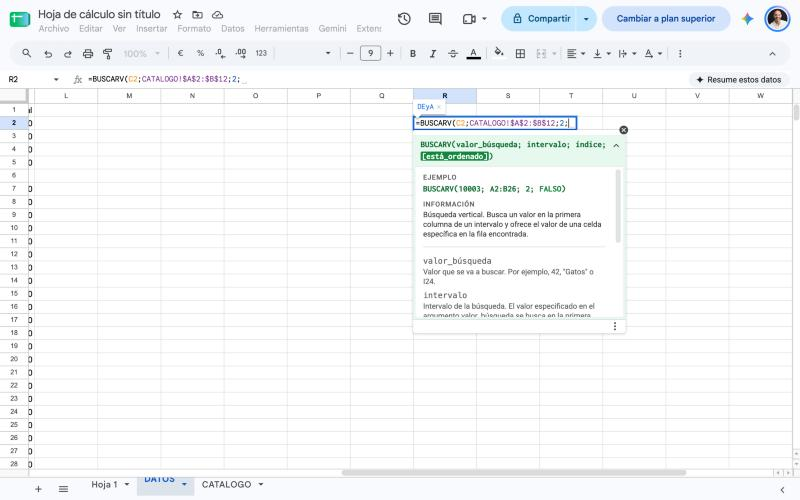
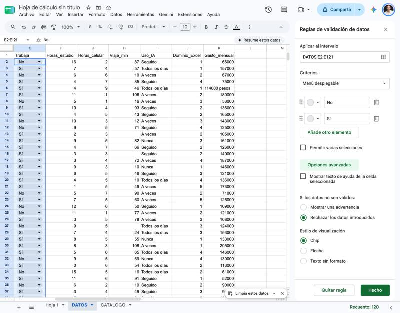

SI, Y, O: que la planilla decida
Hasta acá las fórmulas hacían siempre lo mismo para todas las filas. La función SI permite que la planilla decida: si se cumple una condición, devuelve una cosa; si no, devuelve otra.
=SI(condición; valor_si_verdadero; valor_si_falso)
| Parte | Qué es | Ejemplo |
|---|---|---|
| Condición | Una comparación que da verdadero o falso | J2<=2 |
| Si verdadero | Lo que devuelve cuando se cumple. El texto va entre comillas | "Inicial" |
| Si falso | Lo que devuelve cuando no se cumple | "Otro" |
| Comparador | Significa |
|---|---|
= | Igual a |
<> | Distinto de |
> < | Mayor que, menor que |
>= <= | Mayor o igual, menor o igual |
Anidar: más de dos resultados
Si hay tres niveles, se pone un SI dentro del valor falso del primero. La columna Dominio_Excel va de 1 a 5, y se quiere agrupar así: 1 y 2 son Inicial, 3 y 4 son Intermedio, 5 es Avanzado:
=SI(J2<=2;"Inicial";SI(J2<=4;"Intermedio";"Avanzado"))
Se lee de adentro hacia afuera: si el valor es 2 o menos, Inicial; si no, se pregunta de nuevo; si es 4 o menos, Intermedio; si no, queda Avanzado.
Combinar condiciones con Y y O
| Función | Devuelve verdadero cuando... | Ejemplo |
|---|---|---|
Y(cond1; cond2) | Se cumplen las dos condiciones | =SI(Y(E2="Sí";F2<5);"Atención";"Ok") |
O(cond1; cond2) | Se cumple al menos una | =SI(O(I2="Seguido";I2="Todos los días");"Frecuente";"Ocasional") |
| J | O | |
|---|---|---|
| 1 | Dominio_Excel | Nivel_Excel |
| 2 | 1 | Inicial |
| 3 | 3 | Intermedio |
| 4 | 5 | Avanzado |
La fórmula anidada clasifica cada respuesta en uno de tres niveles.
💡 El texto va entre comillas
En una fórmula, lo que está entre comillas es texto literal ("Inicial") y lo que no tiene comillas es una referencia o un número. Si olvidás las comillas, Sheets busca una función con ese nombre y devuelve #NAME?.
SI, Y y O sobre 8 filas
- Abrí tu archivo Retrato del curso. Creá una hoja
PRACTICA10y copiá en ella las primeras 8 respuestas:DATOS!A1:K9, con Pegado especial → Solo valores. - En
L1escribíNivel_Excely enL2la fórmula anidada de arriba, copiada hasta la fila 9. Resultado esperado: Inicial en las filas 2, 3, 4, 6, 7 y 9, e Intermedio en las filas 5 y 8. - En
M1escribíRiesgo_cargacon=SI(Y(E2="Sí";F2<5);"Atención";"Ok"). Tienen que aparecer 2 filas con Atención (las respuestas 4 y 5). - En
N1escribíIA_frecuentecon unSIy unO:Frecuentesi el uso es Seguido o Todos los días. Tienen que ser 5 filas frecuentes. - Repaso de la clase anterior: aplicá formato condicional para pintar de naranja las celdas que dicen Atención.
Contar, sumar y promediar con condición
Una vez que cada fila tiene sus categorías, la pregunta que sigue es cuántas hay de cada una. Para eso están las funciones que cuentan, suman o promedian solo lo que cumple una condición.
| Función | Qué hace | Ejemplo |
|---|---|---|
CONTAR.SI(rango; criterio) | Cuenta las celdas que cumplen el criterio | =CONTAR.SI(DATOS!E2:E121;"Sí") da 73 |
SUMAR.SI(rango; criterio; rango_suma) | Suma los valores de otra columna en las filas que cumplen | =SUMAR.SI(DATOS!C2:C121;A2;DATOS!K2:K121) |
PROMEDIO.SI(rango; criterio; rango_promedio) | Promedia los valores de otra columna en las filas que cumplen | =PROMEDIO.SI(DATOS!C2:C121;A2;DATOS!K2:K121) |
Cómo se escribe el criterio
| Quiero... | Criterio | Ejemplo |
|---|---|---|
| Un texto exacto | "Sí" o una celda que lo contenga | =CONTAR.SI(E2:E121;"Sí") |
| Los que no son ese texto | "<>Sí" | =CONTAR.SI(E2:E121;"<>Sí") |
| Un número mayor a otro | ">90" | =CONTAR.SI(H2:H121;">90") da 13 |
| Un número mayor al que está en una celda | ">"&B1 | =CONTAR.SI(H2:H121;">"&B1) |
El signo & es el conector: une un texto con el contenido de una celda. Así el criterio queda atado a una celda y podés cambiar el límite sin tocar la fórmula.
⚠️ Rango fijo con $
Cuando armás una tabla con una fórmula que se copia hacia abajo, el rango de datos tiene que ser absoluto (DATOS!$C$2:$C$121) y el criterio relativo (A2). Si no, el rango se corre fila a fila y los resultados salen mal.
| A | B | C | D | E | |
|---|---|---|---|---|---|
| 1 | Carrera | Departamento | Respuestas | % del total | Gasto promedio |
| 2 | Licenciatura en Administración | DEyA | 27 | 22,5% | $ 132.740,74 |
| 3 | Licenciatura en Comercio Internacional | DEyA | 13 | 10,8% | $ 111.846,15 |
| 4 | Contador Público | DEyA | 14 | 11,7% | $ 143.357,14 |
Primeras filas de la tabla CARRERAS. Las fórmulas leen el nombre de la carrera de la columna A.
Contar, sumar y promediar con condición
- En
PRACTICA10, desdeA12, escribíTrabajany enB12=CONTAR.SI(E2:E9;"Sí"). Tiene que dar 5. - En
A13escribíViajes de más de 90 miny enB13=CONTAR.SI(H2:H9;">90"). Tiene que dar 2. - En
A14escribíUmbral de viajey enB14el número60. EnA15escribíViajes más largos que el umbraly enB15=CONTAR.SI(H2:H9;">"&B14). Tiene que dar 4. Cambiá el umbral a 90 y comprobá que da 2. - En
A16escribíGasto total AdministraciónconSUMAR.SIsobre la columnaC(criterio"Licenciatura en Administración") y suma deK: $ 316.000. EnA17, el promedio conPROMEDIO.SI: $ 158.000. - Repaso: dale formato de moneda a los gastos y revisá a mano que 316.000 es la suma de las dos respuestas de Administración.
BUSCARV: traer datos de otra tabla
En DATOS cada persona tiene su carrera, pero no su departamento. Esa información vive en otra tabla: el catálogo de carreras, que dice a qué departamento pertenece cada una. Cuando un dato está en una tabla y necesitás traerlo a otra, se usa BUSCARV.
=BUSCARV(qué_busco; dónde_busco; columna_a_devolver; FALSO)
| Argumento | En el caso del curso |
|---|---|
| Qué busco | La carrera de la persona: C2 |
| Dónde busco | La tabla del catálogo, fija: CATALOGO!$A$2:$B$12. La primera columna del rango es siempre la que se busca. |
| Columna a devolver | Un número: 2 es la segunda columna del rango, el departamento |
| FALSO | Coincidencia exacta. Es casi siempre lo que querés. |
⚠️ Los espacios rompen la búsqueda
BUSCARV compara textos tal cual. Una carrera con un espacio de más al final no se encuentra y devuelve #N/A. Por eso en la clase de limpieza se recortaron los espacios: si te salteaste ese paso, vas a ver #N/A justo en las filas que lo tenían. Las mayúsculas, en cambio, no molestan.
| A | B | |
|---|---|---|
| 1 | Carrera | Departamento |
| 2 | Licenciatura en Administración | DEyA |
| 3 | Licenciatura en Comunicación Social | CS |
| 4 | Tecnicatura en Programación Informática | CyT |
| 5 | Licenciatura en Artes Electrónicas | EUdA |
La hoja CATALOGO: 11 carreras y su departamento (DEyA, CS, CyT, EUdA).
🔭 Para explorar: BUSCARX
Sheets tiene una función más nueva, BUSCARX, que hace lo mismo sin contar columnas: =BUSCARX(C2;CATALOGO!A2:A12;CATALOGO!B2:B12). Busca en una columna y devuelve de otra, aunque esté a la izquierda. Probala en una celda libre y compará el resultado con BUSCARV.

Mientras escribís la fórmula, Sheets muestra una ayuda con los argumentos. Los llama valor_búsqueda, intervalo, índice y está_ordenado: son los mismos cuatro de la fórmula, con otro nombre. La etiqueta de arriba adelanta el resultado (DEyA).
Traer datos con BUSCARV
- Descargá
Catalogo_carreras_2026.csve importalo a una hoja nueva (separador;), a la que llamásCATALOGO. Tiene que tener 12 filas con el encabezado. - En
PRACTICA10, enO1escribíDepartamentoy enO2=BUSCARV(C2;CATALOGO!$A$2:$B$12;2;FALSO), copiada hasta la fila 9. Resultado esperado: DEyA en 5 filas, CyT en 2 y EUdA en 1. - Comprobalo con
=CONTAR.SI(O2:O9;"DEyA"): tiene que dar 5. - Provocá el problema: agregá un espacio al final de la carrera de
C2. ¿Qué pasa enO2? Sacá el espacio y comprobá que se arregla. - Para explorar: en una celda libre probá
=BUSCARX(C2;CATALOGO!A2:A12;CATALOGO!B2:B12)y compará conBUSCARV.
Validación de datos y rangos con nombre
Los datos sucios que limpiaste el primer día entraron porque nadie controlaba lo que se escribía. La validación de datos evita el problema de raíz: restringe qué se puede cargar en una celda.
Se configura en Datos → Validación de datos → Agregar regla. Elegís el rango y el criterio:
| Criterio | Para qué sirve | Ejemplo |
|---|---|---|
| Menú desplegable (con opciones escritas) | Que solo se pueda elegir entre valores fijos | Trabaja: Sí, No |
| Menú desplegable (de un intervalo) | Las opciones salen de una lista que está en la hoja | Departamento, tomado de una hoja de listas |
| Número entre dos valores | Que no se pueda escribir cualquier cosa | Dominio_Excel: entre 1 y 5 |
Si la entrada es inválida, podés elegir entre Mostrar advertencia (marca la celda pero deja escribir) o Rechazar los datos introducidos (no deja). Para una encuesta, rechazar es lo más sensato.

El panel Reglas de validación de datos: el intervalo, el criterio Menú desplegable con las opciones No y Sí, y Rechazar los datos introducidos.
Ponerle nombre a un rango
En vez de escribir DATOS!$K$2:$K$121 una y otra vez, podés darle un nombre a ese rango en Datos → Intervalos con nombre. Después usás el nombre en las fórmulas: =PROMEDIO(Gasto) es más corto y se entiende solo. El nombre no puede tener espacios ni empezar con un número.
Validación, selector y rango con nombre
- Creá una hoja
LISTASconDepartamentoenA1yDEyA,CS,CyTyEUdAenA2:A5. - En
PRACTICA10, aplicá una validación aE2:E9con menú desplegable deSíyNo, rechazando entradas inválidas. Probá escribirTal vezenE10y mirá qué pasa. Deshacé la prueba. - En
Q1creá un menú desplegable de un intervalo conLISTAS!A2:A5y elegíDEyA. EnR1escribí=CONTAR.SI(O2:O9;Q1): tiene que dar 5. ElegíCyT(2) yEUdA(1). - Ponele el nombre
GastoPal rangoK2:K9(Datos → Intervalos con nombre). EnR2escribí=PROMEDIO.SI(O2:O9;Q1;GastoP). Controles: DEyA $ 114.200, CyT $ 60.000 y EUdA $ 157.000.
Fechas
Para Sheets, una fecha es un número: la cantidad de días que pasaron desde el 30 de diciembre de 1899. Por eso se pueden restar dos fechas y obtener los días entre ellas. Lo que ves como 23/08/2026 es solo el formato de ese número.
| Función | Qué devuelve | Ejemplo |
|---|---|---|
HOY() | La fecha de hoy. Se actualiza sola cada vez que abrís el archivo | =HOY() |
AHORA() | La fecha y la hora actuales | =AHORA() |
DIAS(fin; inicio) | Los días entre dos fechas | =DIAS(HOY();B2) |
MIN y MAX | La fecha más antigua y la más reciente de un rango | =MIN(DATOS!B2:B121) |
⚠️ Cuándo no usar HOY()
Como HOY() cambia todos los días, cualquier resultado que dependa de ella también cambia. Es ideal para "cuántos días pasaron desde...", pero no la uses para un informe que tiene que mostrar siempre las mismas cifras: ahí escribí la fecha a mano.
Fechas
- En
PRACTICA10, enS1escribíDias_desdey enS2=DIAS(HOY();B2), copiada hasta la fila 9. Si sale con formato de fecha, pasala a Formato → Número → Número. - En
T1escribí=MIN(B2:B9)y enT2=MAX(B2:B9), con formato de fecha. Controles: 11/08/2026 y 23/08/2026. - En
T3restá las dos fechas. Tiene que dar 12.
Filtros y SUBTOTAL
Un filtro oculta las filas que no cumplen una condición, sin borrarlas. Es la herramienta para mirar un pedazo de la tabla: una carrera, una franja de edad, los que trabajan.
Se activa con Datos → Crear un filtro, o con el ícono de la barra de herramientas. Aparece un botón en cada encabezado; con él podés filtrar por valores (tildando los que querés ver) o por condición (por ejemplo, mayor que 60). Se pueden combinar filtros de varias columnas.
💡 Vistas de filtro
Un filtro común afecta a todas las personas que tienen el archivo abierto. Si trabajás en equipo, usá Datos → Vistas de filtro → Crear nueva vista de filtro: el filtro es solo tuyo y no cambia lo que ven los demás.
Calcular solo lo que se ve: SUBTOTAL
SUMA y PROMEDIO siguen sumando las filas ocultas por un filtro. Para calcular solo lo visible se usa SUBTOTAL(código; rango), donde el código elige la operación:
| Código | Operación sobre las filas visibles | Ejemplo |
|---|---|---|
101 | Promedio | =SUBTOTAL(101;DATOS!K2:K121) |
102 | Cuenta números | =SUBTOTAL(102;DATOS!K2:K121) |
103 | Cuenta celdas con datos | =SUBTOTAL(103;DATOS!A2:A121) |
109 | Suma | =SUBTOTAL(109;DATOS!K2:K121) |
Filtros y SUBTOTAL
- En
PRACTICA10, enU1escribí=SUBTOTAL(103;A2:A9)y enU2=SUBTOTAL(101;K2:K9). Sin filtros: 8 y $ 106.000. - Activá el filtro sobre la tabla (Datos → Crear un filtro) y filtrá
Trabajapor Sí. Tendrían que quedar 5 filas, con un promedio de $ 132.400. - Sumá un segundo filtro:
Viaje_mincon la condición Mayor que60. Tendrían que quedar 3 filas y un promedio de $ 130.333,33. - Comparalo con
=PROMEDIO(K2:K9): sigue dando $ 106.000. ¿Por qué? Quitá todos los filtros.
El pedido de la clase
Ya hiciste todo sobre 8 filas, con cifras que podés comprobar a ojo. Ahora lo aplicás a las 120 respuestas reales. Este es el trabajo que se entrega: un solo archivo que sirve también para dar el presente.
📌 El pedido de Secretaría Académica
Necesitamos clasificar las respuestas, saber cuántas hay por carrera y por departamento, cuidar la carga de datos y poder mirar un grupo en particular. Todo en el archivo de la encuesta.
Clasificar, contar y consultar la encuesta
Trabajá en el archivo Retrato del curso, en las hojas con los datos reales. Estos son los pasos, con los controles.
- En
DATOS, agregáNivel_ExcelenO,Riesgo_cargaenPeIA_frecuenteenQ, hasta la fila 121. Controles: Atención en 27 filas y Frecuente en 65 e Inicial en 65. - En
R, agregáDepartamentoconBUSCARVsobreCATALOGO(la hoja que ya importaste). No tiene que haber ningún#N/A. - En
RESUMEN, agregáPersonas que trabajan(73),% que trabaja(60,83%) yViajes de más de 90 min(13), conCONTAR.SI. - Creá la hoja
CARRERAScon las 11 carreras, su departamento (BUSCARV), las respuestas (CONTAR.SI, rango absoluto), el % del total y el gasto promedio (PROMEDIO.SI). Controles: Administración 27, Contador Público 14 con $ 143.357,14, Educación 4. La suma de respuestas da 120 y la de porcentajes 100%. - Aplicá en
DATOSuna validación aE2:E121(Sí o No) y otra aJ2:J121(entero entre 1 y 5). Poné nombre aDATOS!R2:R121(Depto) y aDATOS!K2:K121(Gasto). - En
CARRERAS, creá un selector de departamento enH2(deLISTAS!A2:A5) con=CONTAR.SI(Depto;H2)y=PROMEDIO.SI(Depto;H2;Gasto)debajo. Controles: DEyA 54 con $ 130.462,96; CS 30 con $ 124.466,67; CyT 25 con $ 120.880,00; EUdA 11 con $ 131.000,00. - En
DATOS, agregáDias_desdeenSconDIAS(HOY();B2). EnRESUMEN,Primera respuesta(03/08/2026),Última respuesta(23/08/2026) y los días entre ambas (20). - En
RESUMEN, agregáFilas visibles,Gasto promedio visibleyGasto total visibleconSUBTOTAL. Filtrá Contador Público: 14 filas y $ 143.357,14. Después filtrá Trabaja = Sí y Viaje_min mayor que 60: 29 filas. EnLEEME, escribí una conclusión de una oración sobre ese grupo y dejá los filtros apagados. - Ocultá las hojas de práctica. Hacé Archivo → Hacer una copia con el nombre
Clase 10 - Apellido - AAAA-MM-DD, compartila conunqarchivos@gmail.comcon permiso de Comentador y subí el enlace. Ese enlace es tu presente y tu entrega.
Resumen de la clase
La planilla dejó de repetir cálculos para tomar decisiones. Clasificaste las respuestas con SI y sus combinaciones, armaste la tabla de carreras con CONTAR.SI y PROMEDIO.SI, sumaste el departamento con BUSCARV, protegiste la carga con validación, calculaste días con fechas y aprendiste a mirar un subconjunto de la tabla sin perder la cuenta con SUBTOTAL.
Actividades
 Actualizá tu LinkedIn
Actualizá tu LinkedIn
Google Sheets. Cómo la justificás: automatizo clasificaciones con lógica condicional (SI, Y, O), resumo datos por categoría con CONTAR.SI, SUMAR.SI y PROMEDIO.SI, cruzo tablas con BUSCARV, aseguro la calidad de la carga con validación de datos y analizo subconjuntos con filtros y SUBTOTAL.
Referencia rápida
=SI(condición; si_verdadero; si_falso)SI dentro del valor falso del anteriorY: se cumplen todas. O: se cumple al menos unaCONTAR.SI(rango; criterio)SUMAR.SI(rango; criterio; rango_suma)PROMEDIO.SI(rango; criterio; rango_promedio)"Sí", ">90", ">"&B1& une un texto con una celda.=BUSCARV(qué; dónde; columna; FALSO)$#N/A: no encontró (casi siempre, un espacio de más)BUSCARXHOY() cambia todos los días=DIAS(HOY();B2)SUBTOTAL(101;…) promedio, 103 cuenta, 109 suma, solo lo visibleHerramientas
Los sitios y aplicaciones que usamos en esta clase, a mano. Los costos pueden cambiar; 🎓 indica beneficio para estudiantes.
Planilla de cálculo

Glosario
Comparación que da verdadero o falso, como F2<5.
Un SI colocado dentro de otro para resolver más de dos resultados.
La condición que usan funciones como CONTAR.SI para decidir qué filas cuentan.
El signo &, que une un texto con el contenido de una celda.
Función que busca un valor en la primera columna de una tabla y devuelve el dato de otra columna de la misma fila.
Opción FALSO de BUSCARV: solo acepta valores idénticos al buscado.
Regla que limita qué se puede escribir en una celda.
Nombre propio que se le da a un rango para usarlo en fórmulas en vez de sus coordenadas.
Función que devuelve la fecha actual y se actualiza sola.
Herramienta que oculta las filas que no cumplen una condición sin borrarlas.
Filtro personal que no cambia lo que ven las demás personas que tienen el archivo abierto.
Función que calcula una operación solo sobre las filas visibles de un rango filtrado.
Fuentes
- Universidad Nacional de Quilmes. Informática de Diplomatura: Microsoft Excel y Hoja de Cálculo de Google. Guía de ejercitación de la cátedra (base de esta guía).
- Google. Lista de funciones de Hojas de cálculo de Google.
support.google.com/docs